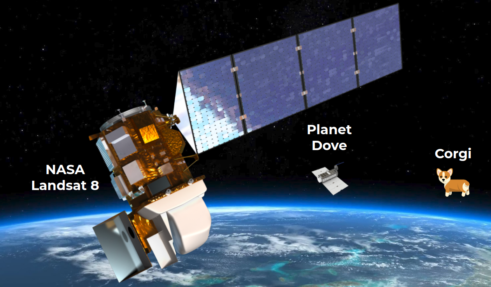
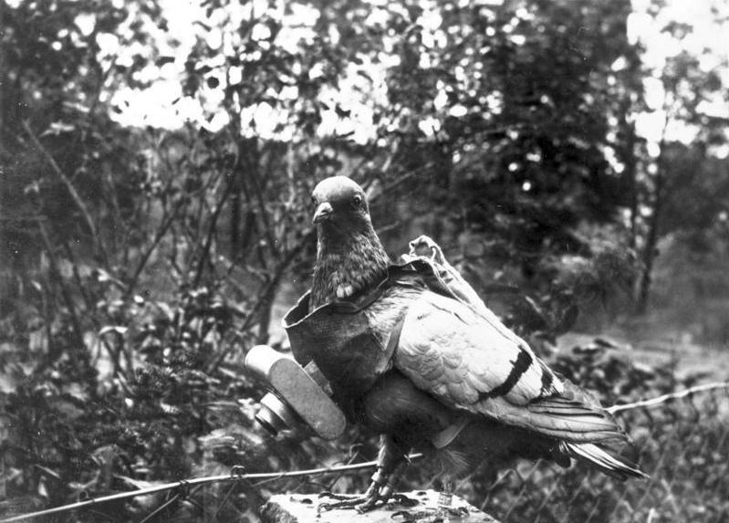
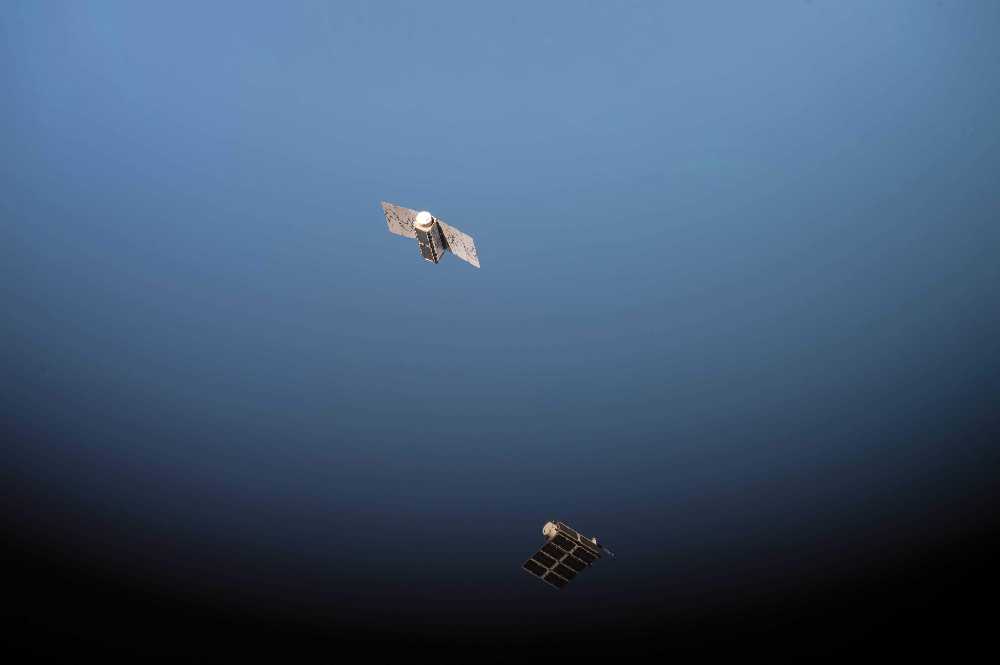
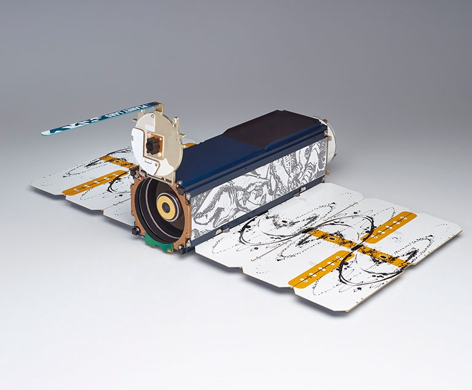

Week 2: Satellites & Remote Sensing
At Planet, we build tiny satellites called Doves. Each Dove is about the size of a small dog, or a little bigger than a loaf of bread:

More than a hundred Doves orbit the Earth every day. Their job is to take pictures of everywhere on Earth, and then send those pictures back home to us here on the surface of the planet.
The scientists that work with those kinds of pictures call this Remote Sensing.
But what is Remote Sensing good for? Why are scientists so interested in these pictures?
Getting a Bird’s Eye View
When we are able to view our own planet from a distance, we can see all sorts of things that we might not necessarily be able to see down here from the surface. Think about zooming out with your camera: remote sensing is how we zoom out to see more of our planet.
Ever since cameras were invented, humans have been looking for ways to take pictures above the surface of Earth. In fact, in the early 1900s, some people even trained pigeons to carry automatic cameras so that they could take pictures while flying!
 An early remote sensing system: a camera worn by a pigeon to take pictures of the Earth from above
Today most remote sensing images don’t come from birds: instead, now we can use airplanes and satellites to carry the cameras. Of course, that doesn’t mean we can’t also name some of our satellites after birds!
 A pair of Doves flying into orbit high above the Earth
What Changes and What Stays the Same
Getting a good look at our planet from above lets us see change over time: if we repeatedly collect remote sensing data, we can see things like:
- A farmer’s field that goes from lush and green in summer to brown and dry in winter
- A living coral reef in the Pacific Ocean as it changes size and shape
- A forest that gradually shrinks as its trees are cut down
- A city’s streets before and after a hurricane sends rain to flood the roads
And much more.
Being able to observe change like that allows us humans to learn things that we might not otherwise have known without the remote sensing data. Seeing change lets us understand the effects of things like climate change and human activity on our planet.
Activity
This week’s activity is about art: you can either create a digital masterpiece on your computer, or print the template linked below. If you print the template you'll also want to bring colored pencils, pens, or markers to your desk on Tuesday.

Every single Dove in orbit right now is decorated with its own unique art. Together, the Doves make up the world’s first art exhibit in space. You can read more about Planet's Art In Space here.
If you could design any art to go to space, what would it be? For this week's activity, use this template to design your own Dove.
Send your design to summercamp@planet.com if you'd like to share your work with us.
Further Inspiration
Feel free to explore these on your own this week.
Reading: Chasing Space by Leland Melvin (Young Readers' Edition)
Watching: October Sky (rated PG)
Q&A With Planeteers
This week, meet Ariel Zajdband, Connor Mckissick, Tanya Harrison and Jenna Mukuno: they will host a Q&A discussion on Thursday at 10:30am Pacific Time.
| Ariel Zajdband holds a BSc and a PhD in Agronomy from the University of Buenos Aires (Argentina). He is the Product Subject Matter Expert in Agriculture for Planet. Ariel has led the product teams in both Trace Genomics and Mavrx, and was one of the early employees of Blue River Technology (acquired by John Deere). He has been developing cutting-edge technologies for agriculture, including soil genomics, robotics, and remote sensing. | |
| Connor Mckissick is a Pre-Sales Engineer at Planet. | |
| Jenna Mukuno is the Senior Manager of Product Marketing at Planet. | |
| Tanya Harrison is the Director of Science Strategy at Planet Federal. |